Capítulo 12 Muestreo e inferencia estadística
En el capítulo anterior dedicado al análisis bivariable se crearon visualizaciones sencillas para describir la posible relación entre dos variables, pero más allá de impresiones visuales no es posible asegurar que esa relación tiene validez estadística. Para establecer esa validez es necesario disponer de cierta dialéctica, de cierta base teórica básica para entender como se comporta un contraste estadístico o un intervalo de confianza. El científico de datos tiende a considerar que toda esa base teórica está obsoleta y que existe un cambio en el paradigma, pero los problemas a resolver con análisis estadísticos avanzados son similares a los que resuelve la estadística clásica. El trabajo del científico de datos en muchas ocasiones consiste en separar la señal del ruido, separar lo aleatorio de lo estadísticamente significativo. En los capítulos anteriores se han ido estableciendo los cimientos para realizar esta labor.
Todo problema y todo estudio parte de la población, en la RAE aparecen las siguientes definiciones de población:
- Acción y efecto de poblar.
- Conjunto de personas que habitan en un determinado lugar.
- Conjunto de edificios y espacios de una ciudad. Atravesó la población de una parte a otra.
- Conjunto de individuos de la misma especie que ocupan determinada área geográfica.
- Sociol. Conjunto de los elementos sometidos a una evaluación estadística mediante muestreo.
Desarrollando esta quinta acepción se tiene que la población es el conjunto de elementos sobre el que se estudia una característica y es necesario tener claro como se compone porque es la herramienta a disposición del científico de datos para resolver el problema que le plantean los datos. Esa población no tiene porque ser individuos, en el ejemplo de trabajo que sirve de hilo conductor se tiene una población de clientes de una compañía de seguros pero se pueden tener empresas, contratos, acciones deportivas,… Además, la población no tiene porque ser finita, de hecho para estudiar a la población será necesario obtener muestras mediante técnicas de muestreo.
12.1 Muestreo
Comprende las técnicas para la selección de elementos de una población. En ocasiones, por recursos o por definición no se dispone del total de población para realizar análisis. En esos casos se trata de obtener una muestra representativa de la población, una muestra que tendrá las mismas características de la población y ello permite inferir información acerca de una característica de la población.
Se distinguen dos grandes tipos de muestreo:
Muestreo no probabilístico. Es un método de selección de elementos de la población donde el analista selecciona los elementos en base a su propia experiencia o necesidad. Ejemplos: seleccionar a clientes con una característica para realizar un análisis cualitativo.
Muestreo probabilístico. Cada elemento de la población tiene una probabilidad conocida a priori de ser seleccionado para el estudio.
El científico de datos trabaja habitualmente con muestreo probabilístico y dentro de este tipo de muestreo existen diversas técnicas encaminadas a garantizar la representatividad de la muestra, garantizan que la selección de elementos tenga el rigor requerido para el análisis.
Para entender mejor como se comportan las distintas técnicas de muestreo se recomienda leer el siguiente enlace al blog de Anabel Forte donde se tratan poblaciones y muestras. Se considera que el científico de datos debe conocer los siguientes tipos de muestreo pero estas líneas son un atisbo sobre las posibilidades del muestreo estadístico, se pueden plantear diseños muy complejos.
12.1.1 Muestreo aleatorio simple
Todos los elementos son elegidos al azar entre toda la población porque todos ellos tienen la misma probabilidad de ser elegidos. Será la técnica que más utilice el científico de datos porque es habitual separar grupos de entrenamiento, grupos de test y grupos de validación cuando se realizan procesos de modelización. En R hay múltiples formas de realizar una muestra aleatoria mediante muestreo aleatorio simple, con dplyr se puede realizar del siguiente modo:
library(tidyverse)
library(formattable)
library(gridExtra)
train <- read.csv("./data/train.csv")
set.seed(10)
muestra_aleatoria1 <- train %>% sample_n(size = 100, replace = F)Con la función set.seed(10) se fija la semilla ya que en realidad R genera números pseudoaleatorios y al fijar la semilla se obtiene siempre la misma muestra aleatoria lo que garantiza que los trabajos puedan ser reproducibles, en este caso con sample_n se obtiene una muestra de tamaño size observaciones y la opción replace indica si se hace con reemplazamiento de individuos o no. Si se quiere obtener una muestra que sea una proporción:
En el ejemplo se obtiene una muestra aleatoria de un 10% de las observaciones mediante la instrucción sample_frac. Si el científico de datos desea dividir un data frame en dos partes es habitual el empleo de índices:
set.seed(10)
selecccionar <- sample(seq(1:nrow(train)) , round(nrow(train) * 0.70))
datos_entrenamiento <- train[selecccionar,];
datos_test <- train[-selecccionar,];
# % de datos de entrenamiento
nrow(datos_entrenamiento)/nrow(train)## [1] 0.6999992## [1] 0.3000008De ese modo se han dividido los datos de partida en dos data frames disjuntos donde datos_entrenamiento tiene el 70% de las observaciones y datos_test tiene el 30% de observaciones restantes del conjunto de datos de partida.
12.1.2 Muestreo aleatorio estratificado
Existe una población dividida en grupos homogéneos llamados estratos y se realiza un muestreo aleatorio dentro de cada uno de los estratos. Permite toma muestras de mayor tamaño donde así fuera necesario. El científico de datos empleará este tipo de técnica cuando tenga que balancear una muestra para un modelo (por ejemplo).
En el ejemplo de trabajo se pretende balancear la muestra para equilibrar al 50% aquellos clientes que están interesados y los que no están interesados en el seguro de automóviles. Habría dos formas de hacer esta tarea, aumentar el número de interesados o disminuir el número de no interesados, siempre artificialmente, para ilustrar la situación:
no_interesados <- nrow(train[train$Response==0,])
interesados <- nrow(train[train$Response==1,])
muestra_interesados <- train %>% filter(Response==1) %>% sample_n(no_interesados,replace = T)
muestra_aumentada <- train %>% filter(Response==0) %>% bind_rows(muestra_interesados)
muestra_disminuida <- train %>% filter(Response==1) %>%
bind_rows(sample_n(train %>% filter(Response==0), size=interesados))Muestra con número de interesados incrementados artificialmente:
| Response | conteo |
|---|---|
| 0 | 334399 |
| 1 | 334399 |
Muestra con número de interesados decrementados artificialmente:
| Response | conteo |
|---|---|
| 0 | 46710 |
| 1 | 46710 |
En ambos casos la proporción es del 50%. Esta situación se la encontrará el científico de datos cuando tenga baja proporción de casos a investigar, por ejemplo, si únicamente un 1% de los clientes estuviera interesado, cualquier modelo estadístico con asegurar que nadie está interesado acertaría el 99% de las ocasiones, desde un punto de vista teórico sería un buen modelo. Mediante el balanceo de la muestra se procura, que el modelo detecte esos patrones capaces de discriminar para que, en la práctica, el modelo cumpla su función.
Estos ejemplos se ilustran con la librería dplyr pero se recomienda el uso de librerías específicas de muestreo como pueda ser sampling:
library(sampling)
muestra_balanceada <- strata(train, stratanames = "Response", size = c(10000,10000))
formattable(muestra_balanceada %>% group_by(Response) %>% summarise(conteo=n()))| Response | conteo |
|---|---|
| 0 | 10000 |
| 1 | 10000 |
12.1.3 Muestreo por conglomerados
Supone seleccionar al azar todos los elementos de un grupo o un conglomerado, es un tipo de muestreo aleatorio donde se seleccionan todos los elementos de un conglomerado. Si el científico de datos selecciona un colegio, una calle, una provincia,… está realizando muestreo por conglomerados. En el ejemplo de trabajo se desean seleccionar 100 clientes de la provincia de Madrid y 100 clientes de la provincia de Barcelona.
Barcelona <- train %>% filter(Region_Code==8) %>% sample_n(100)
Madrid <- train %>% filter(Region_Code==28) %>% sample_n(100)El científico de datos ha de saber que en el momento de realizar una selección de observaciones de cualquier tipo que está haciendo muestreo y por ello debe conocer y argumentar los motivos que le han llevado a realizar esa selección. Como se señaló con anterioridad estos apuntes son un mínimo, el muestreo abarca técnicas y modelos más complejos.
12.2 Inferencia estadística
Inferir significa extraer una conclusión a partir de hechos concretos a hechos generales. La inferencia estadística trata de extraer conclusiones sobre una característica, sobre un parámetro de la población a partir de una muestra de ésta. Los parámetros a analizar se denominan estadísticos muestrales, además si se conoce la distribución de dichos estadísticos (generalmente distribución normal) y se cumplen una serie de condiciones se trata de inferencia paramétrica. La estadística paramétrica clásica plantea tres tipos de problemas:
- Estimación puntual en la que se trata de dar un valor al parámetro a estimar (Ej: valor esperado de una media).
- Estimación por intervalos (buscar un intervalo de confianza).
- Contrastes de hipótesis donde se busca contrastar información acerca del parámetro.
Se parte de un experimento, repetido varias veces y se obtiene una muestra con variables aleatorias independientes idénticamente distribuidas y función de distribución conocida. Por ejemplo, se pretende estimar la altura media de los varones españoles, se recogen las alturas de 30 individuos y su media es de 1,74 metros. Esa es una estimación puntual. Entonces, cualquier función de la muestra de 30 varones que no dependan del parámetro a estimar es un estadístico muestra y esa media obtenida que nos sirve para conocer la altura media de los varones españoles es un estimador del parámetro. Ejemplos de estadísticos son el total muestra, la media muestral, la varianza muestral, la cuasivarianza muestral y los estadísticos de orden que habitualmente se representan con letras griegas.
12.3 Estimación de parámetros
Hay que determinar cual es el mejor estimador de un parámetro para una población a partir de una muestra. ¿Cuál será el estadístico muestral que mejor representa ese parámetro poblacional? El mejor estadístico será el más creíble, el más verosímil y por ello se denomina estimador de máxima verosimilitud pero tiene que cumplir una serie de condiciones:
Será aquel que tiene menor sesgo. Esto se cumplirá cuando el promedio de las distintas estimaciones es análogo al parámetro poblacional.
Será el más eficiente. Cuando la desviación de las distintas estimaciones es la más baja, se minimiza la varianza de esas estimaciones.
Será el más consistente. Si la muestra crece también crece la probabilidad de que ese sea el estimador.
Será suficiente. Ningún estadístico calculado sobre la muestra va a proporcionar información adicional sobre su valor.
A la hora de estimar el parámetro se plantea un dilema que el científico de datos deberá abordar en múltiples ocasiones, se trata del dilema sesgo - varianza. 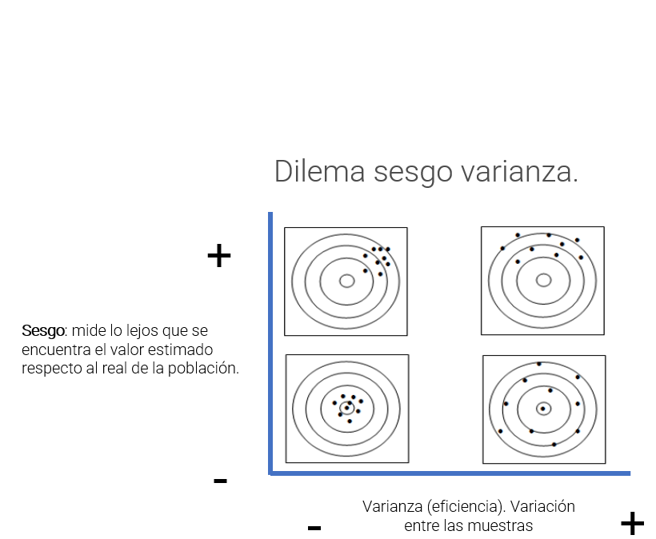
Este dilema está presente siempre que se trabajan datos. Por ejemplo, aseverar que los inmigrantes cometen más delitos que los residentes de un país. Sin embargo, son más los hombres que cometen delitos que las mujeres. En ese caso la solución para vivir con mayor seguridad no sería una sociedad sin extranjeros, será una sociedad sin hombres. Para dar ambos datos se introduce sesgo, puede ser cierto que se acierte en mayor medida pero introduciendo condiciones que interesan al analista.
El científico de datos se verá en esta situación, la mejor solución es argumentar, motivar y consensuar el sesgo con los usuarios de los datos. En el ejemplo de trabajo las aproximaciones iniciales a los datos ya están planteando este dilema. Hay observaciones que deben ser eliminadas debido a que no aportan a la resolución del problema, mejorarán la estimación del número de respuestas positivas pero, ¿aportan algo al análisis?
bivariable <- function(df, target, varib, ajuste=1){
target = as.symbol(target)
fr_analisis = as.symbol(varib)
g <- df %>%
group_by(factor_analisis = as.factor(!!fr_analisis)) %>%
summarise(pct_clientes = round(n()*100/nrow(df),1),
pct_interesados = round(sum(!!target)*100/n(),1), .groups='drop') %>%
ggplot(aes(x=factor_analisis)) +
geom_line(aes(y=pct_interesados * ajuste), group=1, color="red") +
geom_col(aes(y=pct_clientes),fill="yellow",alpha=0.5) +
geom_text(size=3, aes(y=pct_interesados * ajuste, label = paste(pct_interesados,' %')), color="red") +
scale_y_continuous(sec.axis = sec_axis(~./ajuste, name="% interesados"), name='% clientes') +
theme_light()
g + labs(title = paste0("Análisis de la variable ",varib))
}
grid.arrange(ncol=2,
bivariable(train, 'Response', 'Driving_License', 1),
bivariable(train, 'Response', 'Vehicle_Damage', 1),
bivariable(train, 'Response', 'Previously_Insured', 1))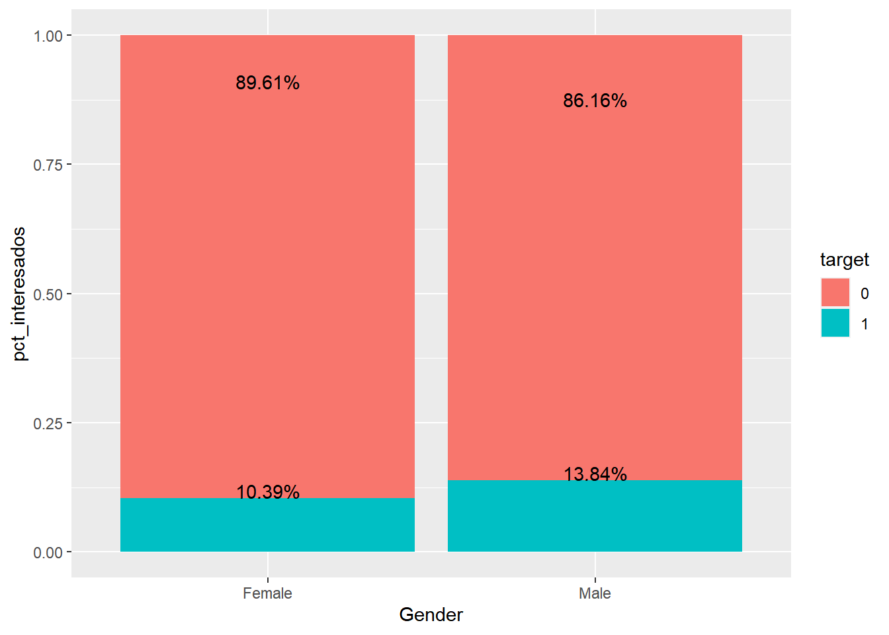
La estimación mejorará si se incluye la variable Vehicle_Damage y Previously_Insured porque los clientes sin cobertura de daños no van a contratar, igual que aquellos que ya han estado asegurados, no deben de ser reglas, deben ser condiciones a la hora de seleccionar clientes pero el analista debe tener claro, argumentar estas acciones y consensuar con los usuarios de los datos si son correctas las decisiones y los sesgos que está introduciendo en su análisis.
12.4 Intervalos de confianza
El intervalo de confianza está presente en el lenguaje, si alguien pregunta sobre el precio de una vivienda no es posible dar un número, se da un mínimo y un máximo que recoja el mayor número de viviendas. El intervalo de confianza será un rango que recoja un x% de los posibles valores que toma una variable. Y su creación se sustenta en el Teorema central del límite. Éste dice, si se suman variables aleatorias, sin importar la distribución que éstas tienen, el resultado final será una variable con distribución normal si se cumplen ciertas condiciones:
- Las variables aleatorias tienen varianza finita
- Hay un número elevado de variables aleatorias
Para entenderlo mejor, se lanza al aire una moneda 100 veces y se anota el número de caras, se repite el experimento 10 veces:
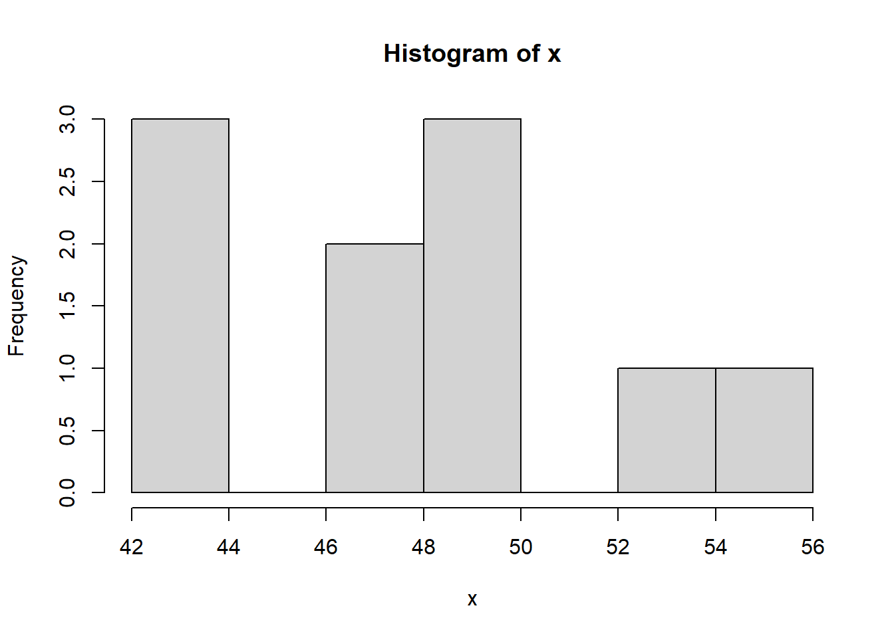
Si ese mismo experimento se repite 1000 veces:

¿Qué forma empieza a tomar ese número de caras? Efectivamente, cuando hay un número elevado de variables la distribución empieza a asemejarse a una distribución normal. Desde una distribución binomial como es el lanzamiento de una moneda se ha llegado a una distribución normal. Llevando este teorema al ejemplo de trabajo:
edad_40 <- train %>% filter(Age==40)
medias_muestras <- NULL
for (i in seq(1:500)){
muestra <- edad_40 %>% sample_n(100, replace = T)
medias_muestras <- rbind.data.frame(medias_muestras, mean(muestra$Response))
}
names(medias_muestras) <- "medias_response"Se realizan 500 muestras con reemplazamiento de tamaño 100 clientes encuestados de 40 años de edad. Si se estudia la distribución de las medias de la variable respuesta en esas 500 muestras:
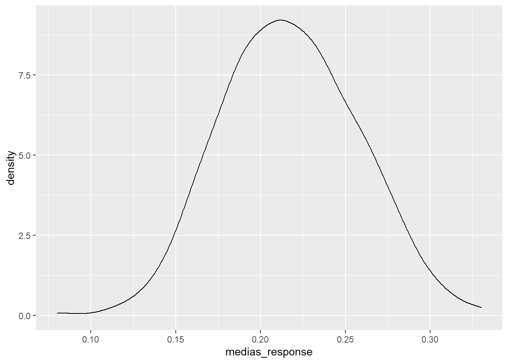
Recuerda a la distribución normal con sólo 100 observaciones seleccionadas en cada muestra, en el capítulo 10 se demostró mediante simulación que en espacio de 2 desviaciones estaban el 95% de los posibles valores:
medias_muestras %>% ggplot(aes(x=medias_response)) + geom_density() +
geom_vline(xintercept=mean(medias_muestras$medias_response)-sd(medias_muestras$medias_response)*2, color = 'red') +
geom_vline(xintercept=mean(medias_muestras$medias_response)+sd(medias_muestras$medias_response)*2, color = 'red')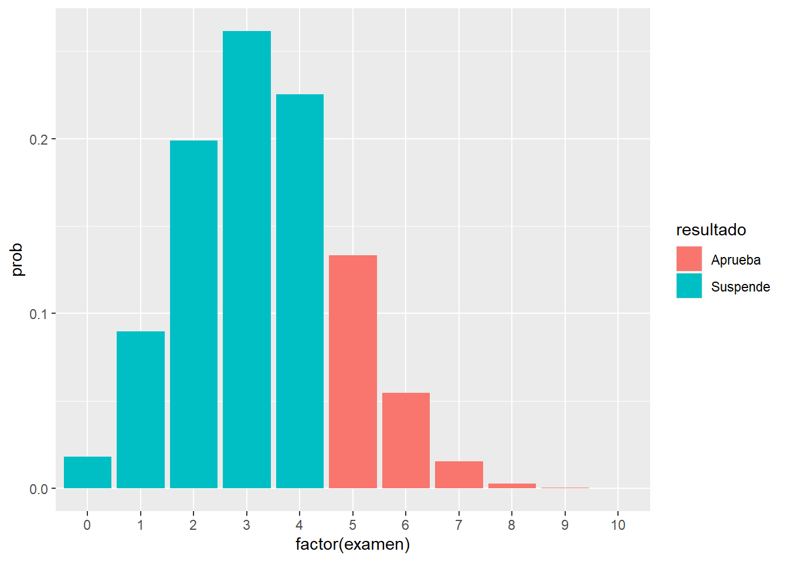
El 95% de los posibles valores que va a tomar la media de la respuesta para los clientes de 40 años está dentro de ese intervalo (de confianza). Si se lleva este trabajo teórico al total de los grupos de edad para una confianza de 1 - \(\alpha\) se produce un error que se define como:
\[Error = Z_{\frac{\alpha}{2}} \frac{\alpha}{\sqrt{n}}\]
De lo que se deduce que la media estará en un intervalo definido por ese error:
\[MED-ESTIMADA - Z_{\frac{\alpha}{2}} \frac{\alpha}{\sqrt{n}} < MED-POBLACIONAL < MED-ESTIMADA + Z_{\frac{\alpha}{2}} \frac{\alpha}{\sqrt{n}} \]
Para entenderlo mejor se programa con R el intervalo sobre la variable Age del conjunto de datos de trabajo paso a paso.
resumen <- train %>%
group_by(factor_analisis = Age) %>%
summarise(porcen_clientes = round(n()*100/nrow(train),1),
porcen_interesados = round(sum(Response)/n(),3),
media_interesados = round(mean(Response),3),
z = -qnorm(0.025,0,1),
desviacion = sd(Response),
n_grupo = n())
resumen[(1:10),]## # A tibble: 10 x 7
## factor_analisis porcen_clientes porcen_interesados media_interesados z desviacion n_grupo
## <int> <dbl> <dbl> <dbl> <dbl> <dbl> <int>
## 1 20 1.6 0.027 0.027 1.96 0.163 6232
## 2 21 4.3 0.035 0.035 1.96 0.183 16457
## 3 22 5.5 0.036 0.036 1.96 0.187 20964
## 4 23 6.4 0.037 0.037 1.96 0.188 24256
## 5 24 6.8 0.035 0.035 1.96 0.184 25960
## 6 25 5.4 0.036 0.036 1.96 0.185 20636
## 7 26 3.6 0.036 0.036 1.96 0.186 13535
## 8 27 2.8 0.044 0.044 1.96 0.205 10760
## 9 28 2.4 0.069 0.069 1.96 0.253 8974
## 10 29 1.9 0.102 0.102 1.96 0.302 7429Para cada grupo de edad se tiene el % de clientes, el % de interesados, que es igual que la media de interesados porque en variables de respuesta binomial la media es la proporción, y el cuantil de una normal que deja tanto a derecha como a izquierda un 2.5% de forma que se pueda crear un intervalo del confianza que contenga el 95% de los posibles valores, además, es necesaria la desviación típica y el número de clientes para cada grupo de edad. Se calculan los límites del intervalo y se realiza una gráfica con los intervalos de confianza:
resumen <- resumen %>% mutate(error_estimacion = z * (desviacion/sqrt(n_grupo)),
lim_inf=media_interesados - error_estimacion,
lim_sup=media_interesados + error_estimacion)
ajuste = 200000
g2 <- ggplot(resumen, aes(x=factor_analisis)) +
geom_col(aes(y=n_grupo),fill="yellow",alpha=0.5) +
geom_line(aes(y=media_interesados * ajuste), group=1, color="red") +
scale_y_continuous(sec.axis = sec_axis(~./ajuste), name="") +
geom_ribbon(aes(ymin=lim_inf*ajuste, ymax=lim_sup*ajuste), linetype=2, alpha=0.5) +
theme_light()
g2 + labs(title = "Análisis de la variable edad") + ylab("% de clientes") + xlab("Edad clientes") 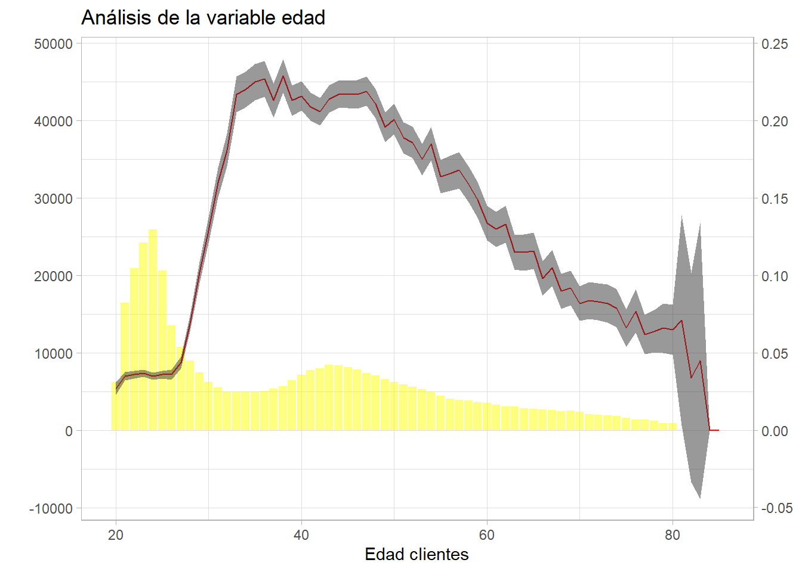
Se observa que grupos con gran número de observaciones crean intervalos muy estrechos y grupos de edad con pocas observaciones crean intervalos enormes, incluso con posibles valores negativos que no se pueden dar. En la fórmula de cálculo del intervalo se tiene \(\sqrt{n}\), la propia definición del intervalo está “ponderando” la definición del intervalo con el número de observaciones, además, una mayor desviación también hará incrementar el tamaño del intervalo. Una de las funciones de los intervalos de confianza reside en la utilidad a la hora de agrupar factores, algo que se trató en el capítulo 11 donde se describió la importancia de crear estas agrupaciones, a modo ilustrativo:
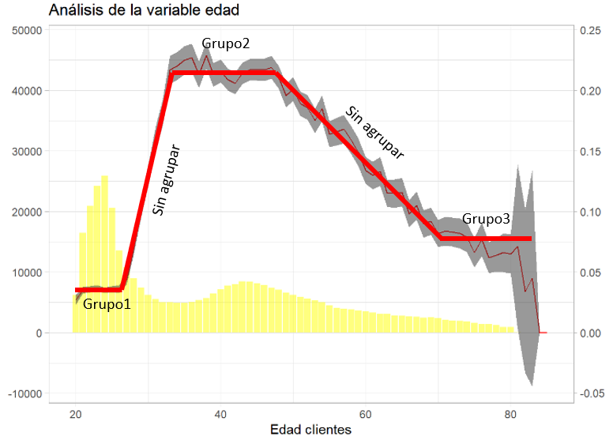
El intervalo de confianza puede servir al científico de datos para agrupar los niveles de un factor. Hay que reseñar que en ggplot se puede emplear geom_ribbon sólo con variables numéricas si se emplean factores es necesario el uso de la función geom_errorbar:
resumen <- train %>%
group_by(factor_analisis = Gender) %>%
summarise(porcen_clientes = round(n()*100/nrow(train),1),
porcen_interesados = round(sum(Response)*100/n(),1),
media_interesados = mean(Response),
z = -qnorm(0.05,0,1),
desviacion = sd(Response),
n_grupo = n(),
error_estimacion = z * (desviacion/sqrt(n_grupo)),
lim_inf=media_interesados - error_estimacion,
lim_sup=media_interesados + error_estimacion)
ajuste = 1000000
g2 <- ggplot(resumen, aes(x=factor_analisis)) +
geom_col(aes(y=n_grupo),fill="yellow",alpha=0.5) +
geom_line(aes(y=media_interesados * ajuste), group=1, color="red") +
scale_y_continuous(sec.axis = sec_axis(~./ajuste), name="") +
geom_errorbar(aes(ymin=lim_inf* ajuste, ymax=lim_sup* ajuste), width = 0.2) +
theme_light()
g2 + labs(title = "Análisis de la variable sexo") + ylab("% de clientes") + xlab("Género clientes") 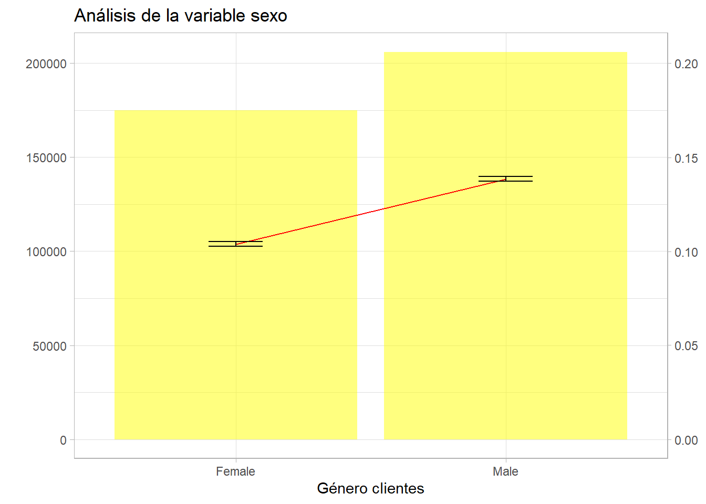
La estadística clásica es muy conservadora, se reitera que el intervalo es función de la raíz del tamaño del grupo, de este modo por sexo el intervalo es mínimo porque el tamaño de los grupos es de centenares de miles de clientes.
12.5 Contrastes de hipótesis
Para realizar contrastes de hipótesis es necesario conocer 3 distribuciones artificiales asociadas a la distribución normal que no se trataron en capítulos anteriores.
La chi-cuadrado (\(\chi^2\)) es una función similar a la gamma y se define como una suma de distribuciones normales al cuadrado, el número de distribuciones normales sumadas son los grados de libertad de la \(\chi^2\)
df1=data.frame(x=rchisq(1:10000, df=1))
df1$grados_libertad = 1
df2=data.frame(x=rchisq(1:10000, df=2))
df2$grados_libertad = 2
df3=data.frame(x=rchisq(1:10000, df=3))
df3$grados_libertad = 3
df5=data.frame(x=rchisq(1:10000, df=5))
df5$grados_libertad = 5
df <- rbind.data.frame(df1, df2, df3, df5) %>%
mutate(grados_libertad=as.factor(grados_libertad))
df %>% ggplot(aes(x=x, group=grados_libertad, color=grados_libertad, fill=grados_libertad)) +
geom_density(alpha=0.3)La t de Student se crea a partir de una normal (0,1) y una chi-cuadrado con n grados de libertad independientes. Una variable se distribuye bajo una t de Student si se puede definir como normal(0,1) dividido por la raíz cuadrada de una chi-cuadrado partida por sus grados de libertad.
La F de Snedecor se crea a partir de dos chi-cuadrado independientes divididas por sus respectivos grados de libertad, así la F de Snedecor tiene dos parámetros que indican sus grados de libertad.
¿Por qué es necesario conocer estas distribuciones? Porque los principales contrastes de hipótesis bajo unos supuestos poblacionales (habitualmente que se distribuyen normalmente) se distribuyen según estas distribuciones artificiales. Y al igual que en el intervalo de confianza hay una región, una zona en la que tendríamos una seguridad de no equivocarnos a la hora de establecer que un valor inferido esté en esa región.
Se tienen muchos supuestos, distribuciones y artificios estadísticos que dependen en gran medida del tamaño de la población. El científico de datos pretende trabajar en un “entorno Big Data” y con modelos de aprendizaje automático donde todos estos aspectos teóricos no tienen cabida y están obsoletos. Pero todos estos conceptos y el método de trabajo es imprescindible. El inicio de todo es la hipótesis, el pilar de una investigación, primero se establece y después se contrasta si es cierta o no. Se parte de una afirmación sobre un parámetro poblacional. ¿Es el parámetro \(\theta\) un valor? Se establece la afirmación contraria \(\theta\) no es ese valor.
¿Un factor es independiente de otro? ¿Es independiente la respuesta positiva a la encuesta del género del cliente encuestado? Este es un contraste de independencia y se realiza mediante un test de la chi cuadrado.

Gráficamente parece que hay diferencia, pero no se sabe si esa diferencia estadísticamente significativa.
¿Hay diferencia de medias entre dos grupos? ¿Es distinta la media de la antigüedad para la respuesta de los encuestados? Este es un contraste de igualdad de medias que se realiza con la distribución t de student.
train %>% ggplot(aes(x=Vintage, group=as.factor(Response), fill=as.factor(Response))) +
geom_density(alpha = 0.3)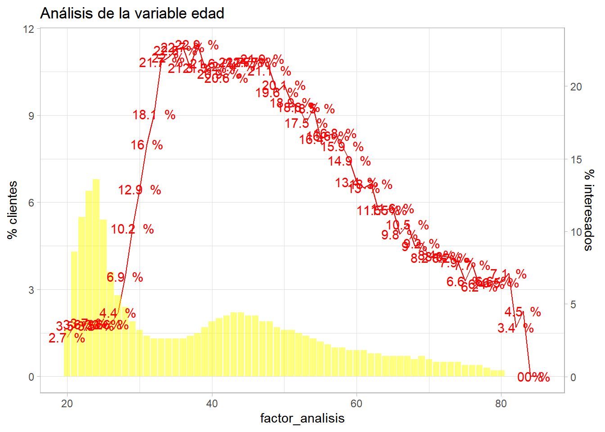
¿Dos poblaciones tienen la misma varianza? ¿Tiene sentido un modelo de regresión? Estos contrastes se realizan mediante un test con la F de Snedecor, se verá en sucesivos capítulos su uso.
Hay infinidad de contrastes de hipótesis, en el este link quedan recogidos una gran parte y fundamentalmente como se clasifican:
En general el contraste de hipótesis es una cuestión del tipo ¿Los datos de nuestras muestras respaldan las hipótesis de la población? y esa cuestión se resuelve del siguiente modo.
Se parte de una hipótesis estadística (\(H_0\)) que es una proposición acerca de una característica de la población de estudio. Si esa hipótesis se realiza sobre un parámetro es una hipótesis paramétrica. Habitualmente las \(H_0\) se enuncian bajo el supuesto de que no hay efectos, por ejemplo, de que las muestras observadas pertenecen a las poblaciones definidas en las Hipótesis Nulas, no hay diferencias estadísticas entre las muestras comparadas, correlaciones nulas,…
Se establece un criterio de precisión que podemos controlar a priori con la probabilidad de rechazar esa hipótesis.
Siempre hay dos hipótesis:
- Hipótesis de partida o nula (\(H_0\)) que supone que el parámetro toma un valor determinado, se supone cierta y se rechazará si no es compatible con la evidencia de la muestra. Se controla a priori el error de rechazarla con el nivel de significación del contraste (p-valor).
- Hipótesis alternativa (\(H_1\)) se formula como la Ho no es cierta.
Evidentemente es posible errar a la hora de realizar el contraste de hipótesis, pero se trata de controlar ese error:
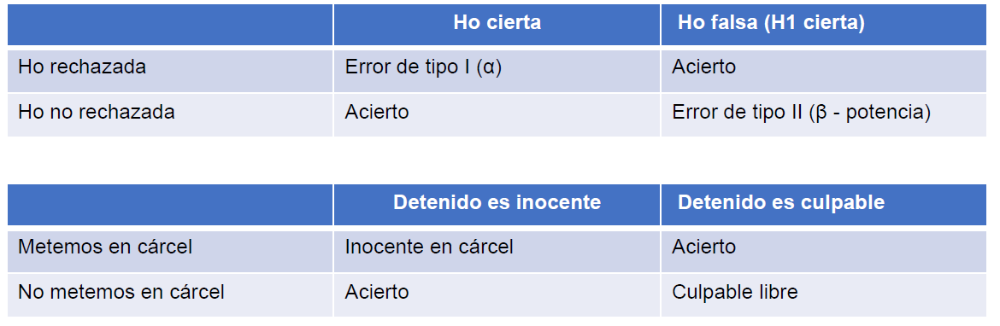
Se define Error de tipo I α como una probabilidad de rechazar \(H_0\) siendo \(H_0\) cierta. Probabilidad de, siendo inocente, dejar libre y se puede controlar. El error de tipo II es β y es una probabilidad de aceptar \(H_0\) siendo \(H_0\) falsa. Probabilidad de, no ser inocente y entrar en la cárcel. No se puede controlar, define la potencia del contraste de hipótesis = 1- β. Todos las aplicaciones estadísticas manejan el concepto p-valor que es una probabilidad fijada por el analista, define un umbral. El contraste de hipótesis sigue una distribución asociada a la normal y va a arrojar una probabilidad, si esa probabilidad está fuera de una región donde se rechaza la \(H_0\) y que fija ese umbral \(\alpha\) (habitualmente 0.05) entonces se podrá rechazar la \(H_0\) bajo los supuestos establecidos. Como se vio en el capítulo 10 la función de densidad permite calcular probabilidades:
aleatorio <- data.frame(dx = rnorm(1000, mean=0, sd=1))
aleatorio %>% ggplot(aes(dx)) + geom_density() +
geom_vline(xintercept = 1.96, linetype="dashed", color='grey', size=2) +
geom_vline(xintercept = 1, color = 'blue') +
geom_vline(xintercept = 2.4, color = 'red') +
annotate("text", x=1, y=0.082, label= "Región de aceptación", color='blue') +
annotate("text", x=2.5, y=0.060, label= "Región de rechazo", color='red') 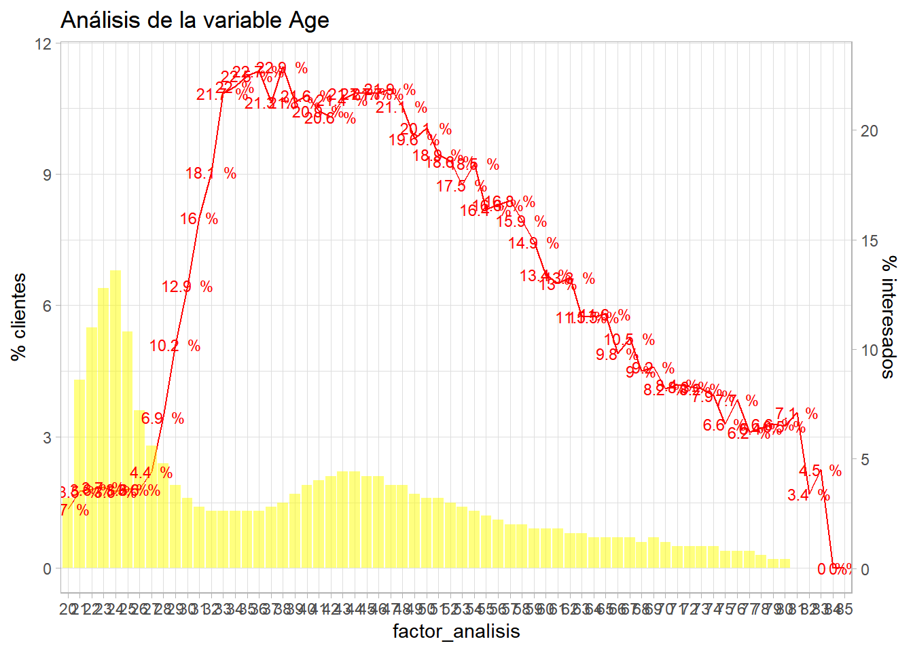
Precisamente en función de esa región de rechazo se pueden clasificar los contrastes de hipótesis en:
- El contraste bilateral sitúa la región de rechazo en los dos extremos (colas) de la distribución muestral. Lanzar un dado y contrastar que la proporción de 3 es 1/6.
- El contraste unilateral sitúa la región de rechazo en uno de los dos extremos (colas) de la distribución muestral. Lanzar el dado y contrastar si la proporción de 3 es < 1/6.
Además de la región de rechazo se pueden clasificar en función del conocimiento de la distribución de la población.
- Inferencia paramétrica, se conoce la distribución de la población y se cumplen todos los supuestos generales de la prueba de contraste.
- Inferencia no paramétrica, no se conoce la distribución y no se cumplen los supuestos
Retomando ejemplos anteriores, ¿es distinta la media de la antigüedad para la respuesta de los encuestados? Es necesario aplicar el test de la \(\chi^2\)
##
## Pearson's Chi-squared test with Yates' continuity correction
##
## data: train$Response and train$Gender
## X-squared = 1047.7, df = 1, p-value < 2.2e-16Como se indicó con anterioridad, el contraste suele partir desde la situación de igualdad, \(H_0\): Hay independencia, la respuesta al cuestionario no depende del sexo. \(H_1\): Hay dependencia, la respuesta depende del sexo. Este contraste arroja un p-valor de 0.0000 … la probabilidad es ínfima, se sitúa dentro de esa región de rechazo. De este modo, fijado un umbral de 0.05 se rechaza la \(H_0\) y se rechaza que hay independencia, la respuesta depende del sexo del encuestado. Recordando el análisis bivariable con los intervalos de confianza anterior:
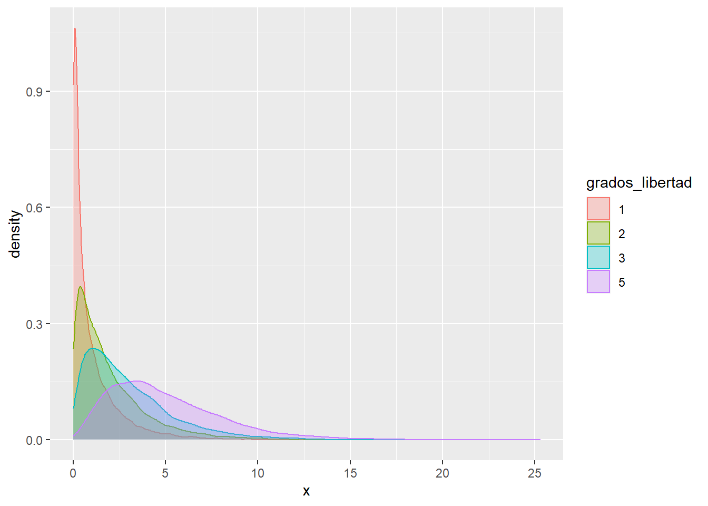
Se aprecia que el intervalo de la proporción de respuestas positivas (de la media) no incluyen la media del otro grupo. Estos dos análisis están ligados. Reduciendo el número de observaciones artificialmente pueden variar los resultados.
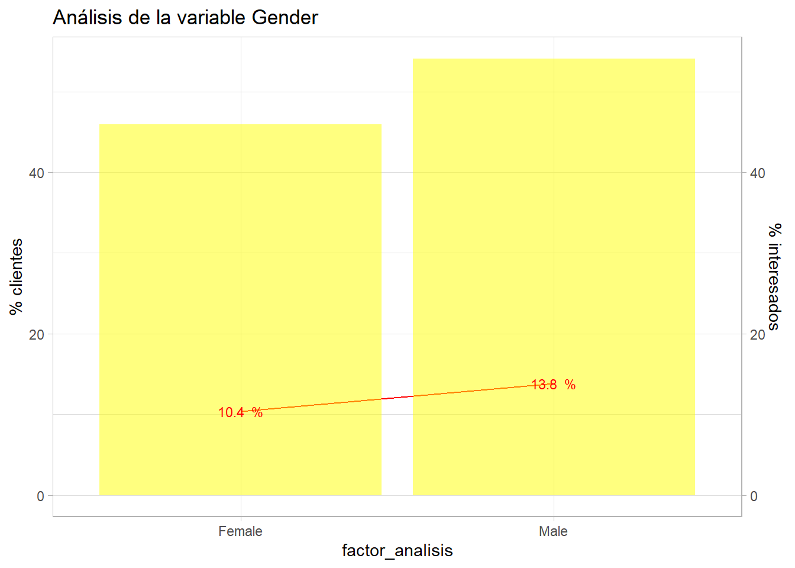
Se aprecia que las proporciones de ambos sexos están dentro del intervalo, el test de la \(\chi^2\) queda:
##
## Pearson's Chi-squared test with Yates' continuity correction
##
## data: muestra$Response and muestra$Gender
## X-squared = 0.022353, df = 1, p-value = 0.8812En este caso se obtiene un p-valor superior a ese umbral habitual de 0.05 se está situando en la región de aceptación de la \(H_0\) por lo que la respuesta no depende del sexo del encuestado. Estos ejemplos están forzados pero es importante que el científico de datos no saque conclusiones erróneas en proporciones pequeñas, un modelo de aprendizaje automático no es tan sensible a esta situación y puede ser más difícil controlarla.
Por otro lado, ¿es distinta la media de la antigüedad para la respuesta de los encuestados? En el capítulo anterior se vio este gráfico.
train %>% ggplot(aes(x=Vintage, group=as.factor(Response), fill=as.factor(Response))) +
geom_density(alpha = 0.3)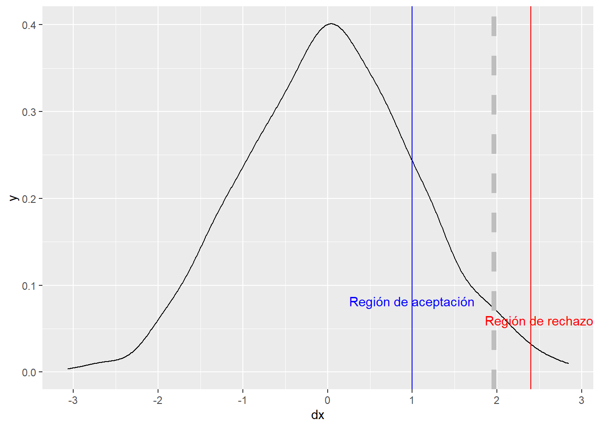
Visualmente no se aprecian diferentes medias pero ese resultado no tiene ninguna validez estadística.
t.test(x = train[train$Response==1,]$Vintage,
y = train[train$Response==0,]$Vintage,
alternative = "two.sided", mu = 0,
var.equal = TRUE, conf.level = 0.95)##
## Two Sample t-test
##
## data: train[train$Response == 1, ]$Vintage and train[train$Response == 0, ]$Vintage
## t = -0.64844, df = 381107, p-value = 0.5167
## alternative hypothesis: true difference in means is not equal to 0
## 95 percent confidence interval:
## -1.0780507 0.5420556
## sample estimates:
## mean of x mean of y
## 154.1122 154.3802En este caso la \(H_0\) en condiciones de igualdad es la media de la antigüedad de los clientes que responden positivamente a la encuesta es igual a la media de la antigüedad de los clientes que responden negativamente y la \(H_1\) la contraria. El contraste tiene una probabilidad de 0.5 por lo que fijado un umbral de 0.05 este está muy por debajo así que no es posible rechazar la hipótesis nula, con estos datos la antigüedad como cliente no está influyendo en la respuesta al cuestionario. De hecho, se ha pedido el intervalo de confianza y se observa que el 0 estaría dentro de ese intervalo. También cabe reseñar que el contraste de diferencia de medias requiere una gran cantidad de supuestos, además el t-test está muy influido por el número de observaciones.
Al igual que sucedía con el muestreo no es necesario que el científico de datos conozca todos los tipos de contrastes y de supuestos necesarios para llevar a cabo el contraste, pero ha de saber plantear una hipótesis, definir correctamente esa hipótesis, determinar que registros se emplean para contrastar esa hipótesis y como han de estar dispuestos esos registros para poder realizar el contraste.
No se trata de resolver un problema mediante estadística clásica, se trata de que el científico de datos tenga esa dialéctica estadística que le va a permitir mejorar en sus procesos de modelización.